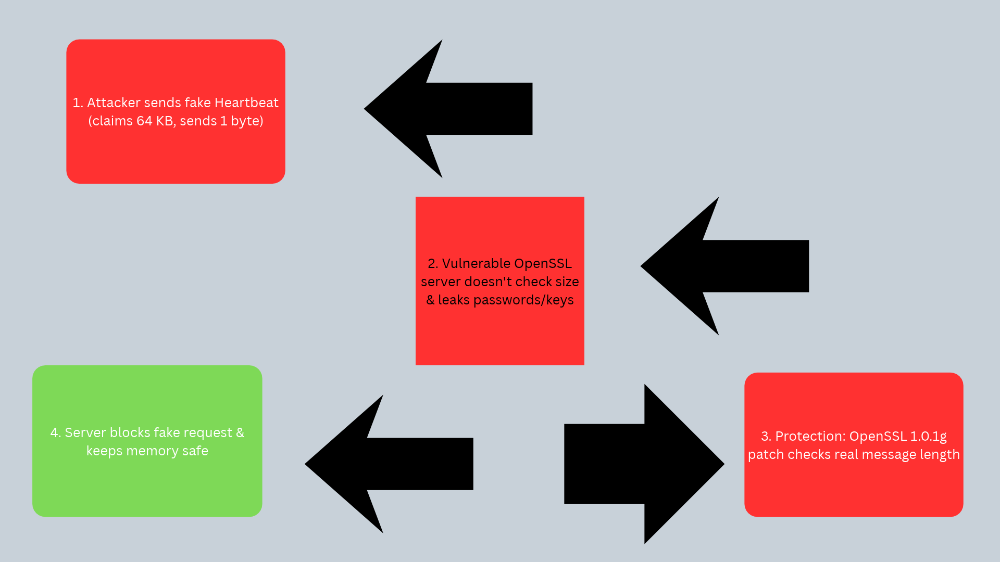

Heartbleed & Open-Source Security
By Rahama
Introduction
This site covers the Heartbleed vulnerability (CVE-2014-0160) and the ethics of responsible vulnerability disclosure. Heartbleed was a critical flaw in the OpenSSL encryption library that allowed attackers to secretly read private server memory across millions of websites.
Ethics: Responsible Vulnerability Disclosure
Ethical Question: Should security researchers privately notify software maintainers and give them time to release a patch before publicly revealing a critical flaw, or publish exploit details immediately?
- Who is helped and harmed: Coordinated disclosure helps everyday users, hospitals, and businesses by allowing patches before mass exploitation. Immediate public leaks help malicious hackers steal data before defenses exist, while hiding flaws indefinitely leaves users unknowingly vulnerable.
- Law, Policy, and Professional Code: Guided by the Computer Fraud and Abuse Act (CFAA) (which prohibits unauthorized access) and the ISC2 Code of Ethics (requiring professionals to protect society and act responsibly).
- My Position: Researchers should follow coordinated responsible disclosure for two main reasons: (1) it prevents widespread data theft while a fix is built, and (2) setting a clear 90-day disclosure deadline pressures vendors to actually fix the bug instead of ignoring it.
- Strongest Counterargument & Answer: Critics argue that waiting to publish leaves the public in the dark if attackers already found the bug privately. However, publishing exploit code before a patch exists guarantees immediate, automated attacks against unpatched systems, causing far greater harm.
- Real-World Case (April 2014): Security researchers at Google and Codenomicon discovered Heartbleed in April 2014 and coordinated privately with the OpenSSL team so version 1.0.1g could be released alongside the public announcement on April 7, 2014.
How the Heartbleed Attack Works
OpenSSL's TLS Heartbeat extension kept encrypted connections alive by echoing back a short message sent by a user. Because OpenSSL versions 1.0.1 through 1.0.1f never checked whether the sender's claimed message length matched the actual data sent, an attacker could send a 1-byte payload while claiming it was 65,535 bytes—tricking the server into returning up to 64 KB of active server memory (usernames, passwords, session tokens, and private SSL keys).
Real-World Incident (April 2014): Following the April 2014 disclosure, attackers exploited unpatched servers—including the Canada Revenue Agency, where roughly 900 taxpayers' Social Insurance Numbers were stolen before systems were patched.

Interactive Attack & Defense Walkthrough
Step 1 (Attack): Client sends a Heartbeat packet with a 1-byte payload but claims the payload length is 64 KB (65,535 bytes).
How Protection Stops It
Vulnerable Behavior (OpenSSL 1.0.1–1.0.1f)
Server allocates memory based on the sender's untrusted length number and copies 64 KB of adjacent RAM back to the attacker without bounds checking.